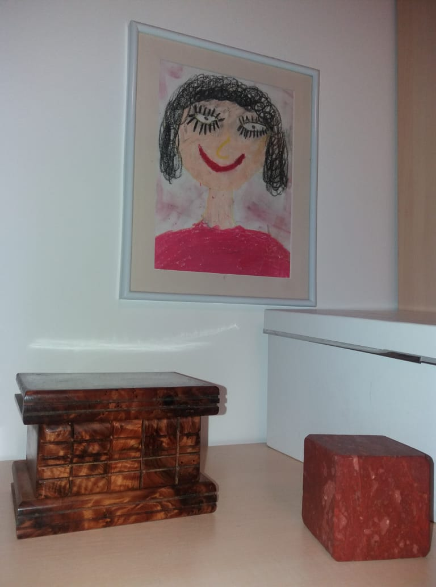
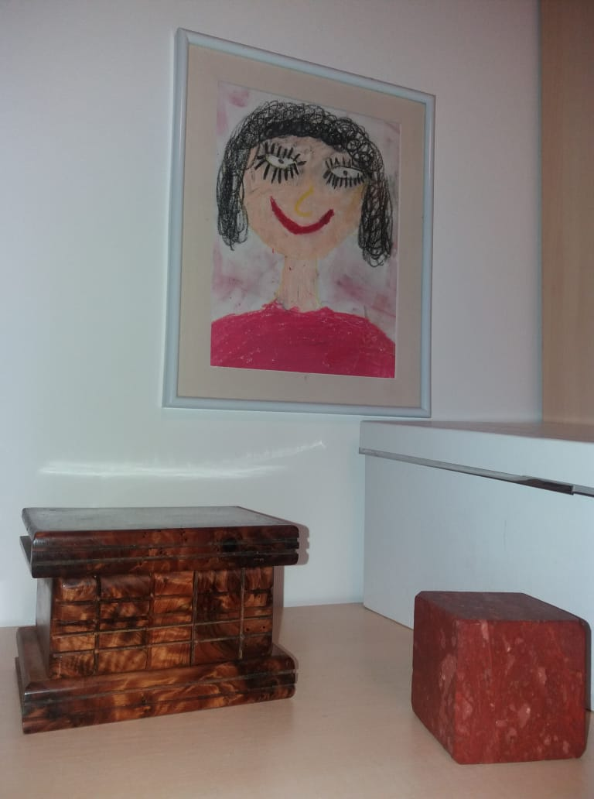

Samsung Galaxy J5
Mobilný telefón Samsung Galaxy J5 je skvelým medzičlánkom medzi low-cost a high-end modelmi od firmy Samsung. Jeho najväčšími výhodami sú kompaktná veľkosť, kvalitný fotoaparán, vysoko citlivý mikrofó a jasno farebný displej. Nevýhodami sú napríklad plastové prevedenie mobilu, kov by ste hladali márne. Taktiež aj klasické rýchlo sa rozbíjajúce predné sklo typické pre telefóny Samsung aj ich Ázijských bratov. Každopádne mobilný telefón Samsung Galaxy J5 odporúčam kúpiť každému, kto požaduje kvalitný mobil za rozumnú cenu.
Test fotoaparátu
 
